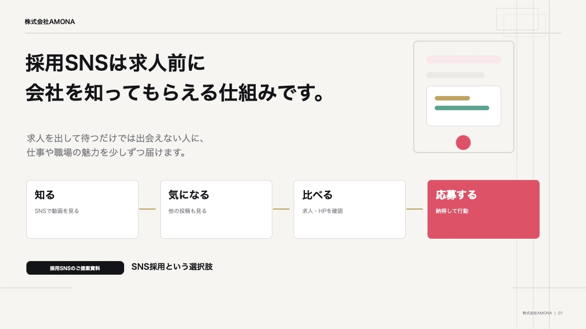
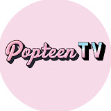

求人媒体に出しても
応募がほとんど来ない
採用単価が上がり続けて
コストが重い
SNSを始めてみたが
続かない・伸びない
若手に会社の魅力が
伝わっていない気がする
その原因は、応募の前段階にあります。
SNSで動画を見る
他の投稿も見る
求人・HPを確認
納得して行動

大型チャンネルの現場で培った企画力・編集力・「見られ続ける」設計を、貴社の採用発信に落とし込みます。累計支援アカウントのフォロワーは1,900万人超、チャンネル累計視聴回数は1.8億回超の制作実績があります。
バズらせて終わりではありません。知る→気になる→比べる→応募する、の各段階に合わせてコンテンツと導線を設計し、応募という成果につなげます。支援先の一例では、採用SNS運用開始1ヶ月で100名を獲得しました。
SNSの知見や社内リソースがなくても大丈夫。現場の撮影設計から投稿後の分析・改善提案まで一括で対応するので、採用担当者様の負担はほとんど増えません。
運用1ヶ月で
100名獲得※
採用向けSNS運用の支援先の一例。求人前から会社を知ってもらう導線を設計し、応募までの意思決定を後押ししました。
タレントの個人チャンネルの制作をサポート。本人のトーンを活かした番組づくりをお手伝いしました。

雑誌発YouTubeの若年女性向けチャンネル制作に制作会社と協働で参画。番組クオリティの維持を支援しました。
500再生 →
2ヶ月で300万再生
平均500再生だった歯科アカウントを、企画設計と投稿改善により初月150万再生、2ヶ月目300万再生まで伸長させました。
集客 最大200名/月
専門性と来院導線を両立する発信を設計。YouTube・TikTokの運用・制作支援で成果を創出しました。
光文社
「女性自身」チャンネル
出版社チャンネルの制作をサポート。編集方針や視聴者層に合わせたYouTube向け動画制作を支援しました。
※支援先の一例です。業種・体制により成果は異なります。
| SNS担当人件費 | 月30〜60万円 |
|---|---|
| 台本作成費 | 月5〜10万円 |
| 動画編集費 | 月10〜30万円 |
| 数値分析費 | 月5〜10万円 |
| 合計 | 月50〜110万円以上 |
※自社運用コストは一般的な目安です。
採用の現状とターゲット（職種・年齢層・エリア）を伺います。
最適な媒体・コンテンツ・KPIを設計し、お見積りをご提示します。
職場の魅力が伝わる動画を、撮影から編集まで一括で制作します。
投稿後の数値を分析し、応募につながるよう改善を重ねます。
「うちの業種でもSNS採用はできる？」という段階のご相談も歓迎です。
現状を伺い、最適な設計をご提案します。
amonacontact@amonacompany.com
無料で相談する